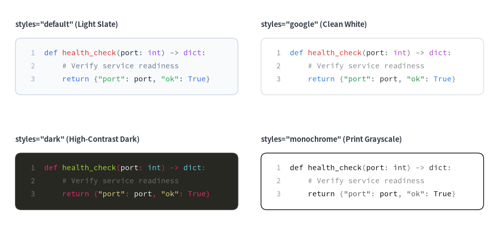
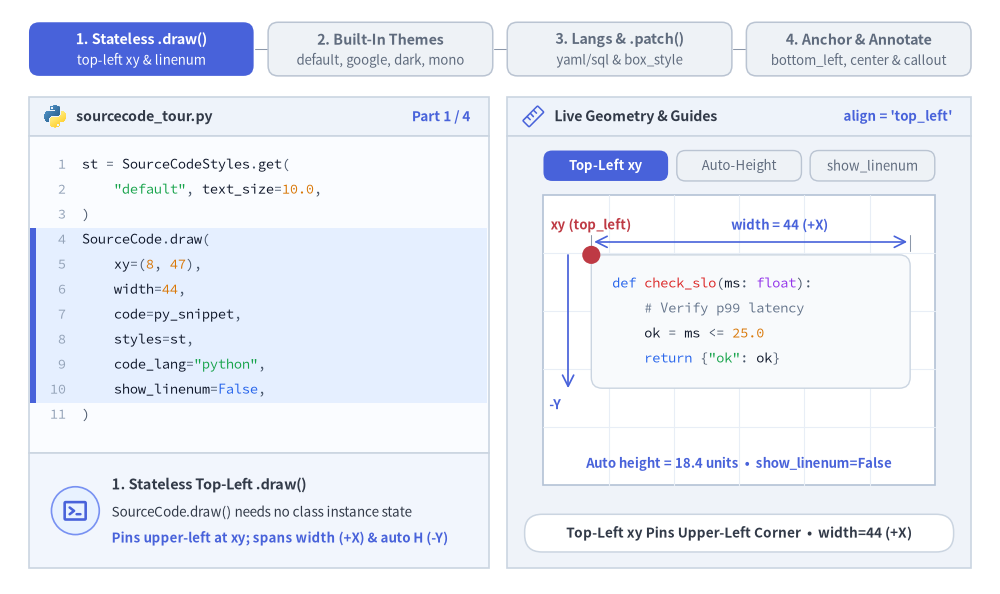
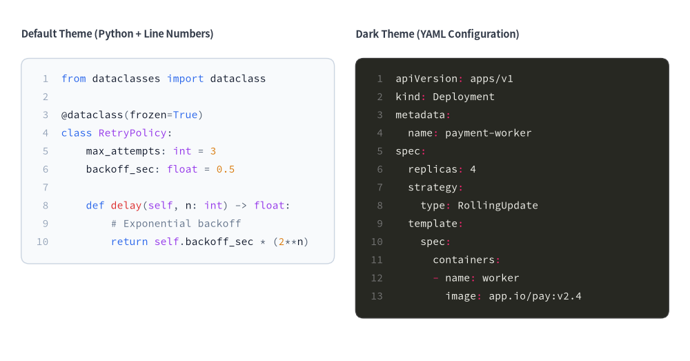
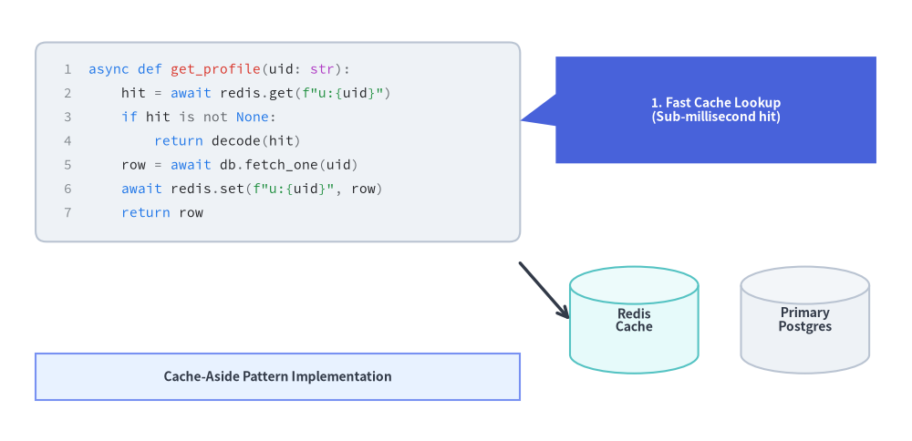

SourceCode
The SourceCode component renders syntax-highlighted source code snippets directly onto the Drawlib canvas as crisp vector shapes and typography powered by Pygments.
It supports built-in syntax themes, optional line-number gutters, CJK monospace fonts, and custom token color overrides.

Source Code
from drawlib.canvas import save, setup
from drawlib.smartarts import SourceCode, SourceCodeStyles
from drawlib.styles import Styles
from drawlib.text import text
setup(width=130, height=64)
snippet = """def health_check(port: int) -> dict:
# Verify service readiness
return {"port": port, "ok": True}"""
themes = [
("default", (4, 54), 'styles="default" (Light Slate)'),
("google", (68, 54), 'styles="google" (Clean White)'),
("dark", (4, 24), 'styles="dark" (High-Contrast Dark)'),
("monochrome", (68, 24), 'styles="monochrome" (Print Grayscale)'),
]
for theme_name, (x, y), label in themes:
text((x, y + 3.5), label, style=Styles.DarkBold.patch(text_size=10.5, halign="left"))
sc_styles = SourceCodeStyles.get(theme_name, font_lang="en", text_size=10.5)
SourceCode.draw(
xy=(x, y),
width=58,
code=snippet,
styles=sc_styles,
code_lang="python",
show_linenum=True,
)
save()
Looking for speech bubbles & callouts? The
bubblespeech()primitive is documented in Callouts, Badges & Status.
1. Core Concepts & Basic Usage
SourceCode.draw(...) (or sourcecode(...)) statelessly renders Pygments-tokenized code blocks anchored by default at Top-Left xy=(x, y) (align="top_left", spanning width rightward along +X and auto-computing container height downward along -Y from line count and text_size). Use SourceCodeStyles.get(...) and .patch(...) to switch built-in themes ("default", "google", "dark", "monochrome"), highlight 20+ languages, toggle line-number gutters (show_linenum), or switch anchor alignment ("bottom_left", "center"):

Source Code
from __future__ import annotations
from drawlib.anim import Animation
from drawlib.canvas import save, setup
from drawlib.icons import code as code_icons
from drawlib.icons import phosphor
from drawlib.lines import line
from drawlib.shapes import circle, rectangle
from drawlib.smartarts import SourceCode, SourceCodeStyles
from drawlib.styles import Styles
from drawlib.text import text
W, H = 138.0, 82.0
setup(width=W, height=H)
anim = Animation(fps=10.0, loop=0)
CODE_TEXT_SIZE = 10.0
PT_TO_CANVAS = W / 720.0
FONT_CANVAS = CODE_TEXT_SIZE * PT_TO_CANVAS
LINE_H = FONT_CANVAS * 1.8
PAD_Y = FONT_CANVAS * 1.2
CODE_STYLES = SourceCodeStyles.get("default", font_lang="en", text_size=CODE_TEXT_SIZE).patch(
box_style=Styles.Neutral.patch(shape_fill_color=(0, 0, 0, 0), shape_line_width=0),
)
PANE_HEADER = Styles.Neutral.patch(
shape_fill_color=(238, 243, 250),
shape_line_color=(203, 213, 225),
shape_line_width=1.2,
shape_r=0.0,
)
EDITOR_BODY = Styles.Neutral.patch(
shape_fill_color=(250, 252, 255),
shape_line_color=(203, 213, 225),
shape_line_width=1.2,
shape_r=0.0,
)
TAKEAWAY_BODY = Styles.Neutral.patch(
shape_fill_color=(242, 246, 253),
shape_line_color=(203, 213, 225),
shape_line_width=1.2,
shape_r=0.0,
)
STUDIO_BODY = Styles.Neutral.patch(
shape_fill_color=(239, 243, 249),
shape_line_color=(203, 213, 225),
shape_line_width=1.2,
shape_r=0.0,
)
PART_ITEMS = [
("1. Stateless .draw()", "top-left xy & linenum"),
("2. Built-In Themes", "default, google, dark, mono"),
("3. Langs & .patch()", "yaml/sql & box_style"),
("4. Anchor & Annotate", "bottom_left, center & callout"),
]
PY_4 = "\n".join([
"def check_slo(ms: float):",
" # Verify p99 latency",
" ok = ms <= 25.0",
' return {"ok": ok}',
])
PY_5 = "\n".join([
"def check_slo(ms: float):",
" # Verify p99 latency",
" ok = ms <= 25.0",
' tag = "PASS" if ok else "WARN"',
' return {"ok": ok, "tag": tag}',
])
YAML_5 = "\n".join([
"service: auth-api",
"replicas: 3",
"tls:",
" mode: STRICT",
" port: 8443",
])
SQL_4 = "\n".join([
"SELECT region, COUNT(*)",
"FROM active_nodes",
"WHERE healthy = TRUE",
"GROUP BY region;",
])
def box_height_for(num_lines: int) -> float:
"""Compute exact SourceCode container height at text_size=10.0."""
return 2.0 * PAD_Y + num_lines * LINE_H
def draw_step_bar(active_part: int) -> None:
"""Draw top 4-part progress bar (active_part is 1..4)."""
pill_w = 31.0
pill_h = 7.4
gap = 2.0
start_x = 4.0 + pill_w / 2.0
cy = 75.2
for idx, (label, sublabel) in enumerate(PART_ITEMS, start=1):
cx = start_x + (idx - 1) * (pill_w + gap)
if idx > 1:
prev_cx = cx - (pill_w + gap)
line(
(prev_cx + pill_w / 2.0 + 0.2, cy),
(cx - pill_w / 2.0 - 0.2, cy),
style=Styles.PrimaryBold if idx <= active_part else Styles.MutedThin,
)
if idx == active_part:
st = Styles.PrimaryFlat.patch(shape_r=1.4)
tst = Styles.WhiteBold.patch(text_size=10.3)
sub_tst = Styles.White.patch(text_size=9.5)
elif idx < active_part:
st = Styles.PrimaryNeutral.patch(shape_r=1.4, shape_line_width=1.1)
tst = Styles.PrimaryBold.patch(text_size=10.3)
sub_tst = Styles.Primary.patch(text_size=9.5)
else:
st = Styles.Neutral.patch(shape_r=1.4, shape_line_width=1.1)
tst = Styles.MutedBold.patch(text_size=10.3)
sub_tst = Styles.Muted.patch(text_size=9.5)
rectangle((cx, cy), width=pill_w, height=pill_h, style=st)
text((cx, cy + 1.35), label, style=tst)
text((cx, cy - 1.55), sublabel, style=sub_tst)
def draw_left_pane(
active_part: int,
code_lines: list[str],
hl_range: tuple[int, int],
icon_fn: object,
summary_title: str,
summary_line1: str,
summary_line2: str,
) -> None:
"""Draw left Python code editor + bottom concept takeaway card."""
x0, w = 4.0, 63.5
cx = x0 + w / 2.0
top_y = 63.2
header_h = 5.4
editor_h = 43.8
takeaway_h = 15.8
rectangle((cx, top_y + header_h / 2.0), width=w, height=header_h, style=PANE_HEADER)
code_icons.python((x0 + 3.6, top_y + header_h / 2.0), width=3.4, style=Styles.Neutral)
text(
(x0 + 6.5, top_y + header_h / 2.0),
"sourcecode_tour.py",
style=Styles.DarkBold.patch(text_size=10.2, halign="left"),
)
text(
(x0 + w - 2.6, top_y + header_h / 2.0),
f"Part {active_part} / 4",
style=Styles.PrimaryBold.patch(text_size=9.8, halign="right"),
)
rectangle((cx, top_y - editor_h / 2.0), width=w, height=editor_h, style=EDITOR_BODY)
hl_start, hl_end = hl_range
hl_top = top_y - PAD_Y - hl_start * LINE_H
hl_bot = top_y - PAD_Y - (hl_end + 1) * LINE_H
hl_cy = (hl_top + hl_bot) / 2.0
hl_h = hl_top - hl_bot
rectangle(
(cx, hl_cy),
width=w - 0.6,
height=hl_h,
style=Styles.Neutral.patch(shape_fill_color=(229, 239, 255), shape_line_width=0),
)
rectangle(
(x0 + 0.55, hl_cy),
width=0.9,
height=hl_h,
style=Styles.PrimaryFlat.patch(shape_line_width=0),
)
SourceCode.draw(
xy=(x0, top_y),
width=w,
code="\n".join(code_lines),
styles=CODE_STYLES,
code_lang="python",
show_linenum=True,
align="top_left",
)
take_cy = 3.6 + takeaway_h / 2.0
rectangle((cx, take_cy), width=w, height=takeaway_h, style=TAKEAWAY_BODY)
circle(
(x0 + 6.4, take_cy),
radius=3.3,
style=Styles.PrimaryNeutral.patch(shape_line_width=1.2),
)
icon_fn((x0 + 6.4, take_cy), width=3.8, style=Styles.PrimaryBold) # type: ignore[operator]
text(
(x0 + 11.4, take_cy + 3.6),
summary_title,
style=Styles.DarkBold.patch(text_size=10.4, halign="left"),
)
text(
(x0 + 11.4, take_cy - 0.2),
summary_line1,
style=Styles.Dark.patch(text_size=9.7, halign="left"),
)
text(
(x0 + 11.4, take_cy - 3.8),
summary_line2,
style=Styles.PrimaryBold.patch(text_size=9.6, halign="left"),
)
def draw_geometry_studio(param_badge: str, footer_caption: str) -> tuple[float, float]:
"""Draw right geometry lab shell, inner coordinate sheet with subtle grid, and footer."""
x0, w = 70.0, 64.0
cx = x0 + w / 2.0
top_y = 63.2
header_h = 5.4
body_h = 59.6
rectangle((cx, top_y + header_h / 2.0), width=w, height=header_h, style=PANE_HEADER)
phosphor.ruler((x0 + 3.6, top_y + header_h / 2.0), width=3.4, style=Styles.Primary)
text(
(x0 + 6.5, top_y + header_h / 2.0),
"Live Geometry & Guides",
style=Styles.DarkBold.patch(text_size=10.2, halign="left"),
)
text(
(x0 + w - 2.6, top_y + header_h / 2.0),
param_badge,
style=Styles.PrimaryBold.patch(text_size=9.6, halign="right"),
)
rectangle((cx, 3.6 + body_h / 2.0), width=w, height=body_h, style=STUDIO_BODY)
sheet_cx, sheet_cy = cx, 35.0
sheet_w, sheet_h = 54.0, 40.0
sx0, sy0 = sheet_cx - sheet_w / 2.0, sheet_cy - sheet_h / 2.0
rectangle(
(sheet_cx, sheet_cy),
width=sheet_w,
height=sheet_h,
style=Styles.Neutral.patch(
shape_fill_color=(255, 255, 255),
shape_line_color=(180, 194, 214),
shape_line_width=1.2,
),
)
g_st = Styles.MutedThin.patch(line_color=(232, 238, 246), line_width=0.8)
for gx in range(1, 6):
vx = sx0 + gx * (sheet_w / 6.0)
line((vx, sy0), (vx, sy0 + sheet_h), style=g_st)
for gy in range(1, 5):
vy = sy0 + gy * (sheet_h / 5.0)
line((sx0, vy), (sx0 + sheet_w, vy), style=g_st)
rectangle(
(cx, 8.4),
width=59.2,
height=5.2,
style=Styles.Neutral.patch(
shape_fill_color=(255, 255, 255),
shape_line_color=(203, 213, 225),
shape_line_width=1.1,
shape_r=2.4,
),
text=footer_caption,
text_style=Styles.DarkBold.patch(text_size=9.8),
)
return sheet_cx, sheet_cy
def draw_sub_pills(scx: float, labels: list[str], active_idx: int) -> None:
"""Draw 3-pill sub-step indicator above the 54.0x40.0 coordinate sheet."""
pw, ph, pgap = 17.2, 4.2, 1.2
p_start = scx - (3 * pw + 2 * pgap) / 2.0 + pw / 2.0
for idx, lbl in enumerate(labels):
px = p_start + idx * (pw + pgap)
if idx == active_idx:
pst = Styles.PrimaryFlat.patch(shape_r=1.2)
ptst = Styles.WhiteBold.patch(text_size=9.5)
elif idx < active_idx:
pst = Styles.PrimaryNeutral.patch(shape_r=1.2, shape_line_width=1.0)
ptst = Styles.PrimaryBold.patch(text_size=9.5)
else:
pst = Styles.Neutral.patch(shape_r=1.2, shape_line_width=1.0)
ptst = Styles.Muted.patch(text_size=9.5)
rectangle((px, 59.1), width=pw, height=ph, style=pst, text=lbl, text_style=ptst)
# =========================================================================
# Part 1: Stateless .draw() — Top-Left xy, Auto-Height & Line Numbers
# =========================================================================
P1_STATES = [
(
PY_4,
4,
False,
3.3,
(3, 9),
[
"st = SourceCodeStyles.get(",
' "default", text_size=10.0,',
")",
"SourceCode.draw(",
" xy=(8, 47),",
" width=44,",
" code=py_snippet,",
" styles=st,",
' code_lang="python",',
" show_linenum=False,",
")",
],
"align = 'top_left'",
"Top-Left xy Pins Upper-Left Corner • width=44 (+X)",
"1. Stateless Top-Left .draw()",
"SourceCode.draw() needs no class instance state",
"Pins upper-left at xy; spans width (+X) & auto H (-Y)",
),
(
PY_5,
5,
False,
3.3,
(4, 9),
[
"# Height scales automatically",
"# with line count & text_size",
"st = get_source_code_styles(",
' "default", text_size=10.0)',
"sourcecode(",
" xy=(8, 47), width=44,",
" code=py_5lines,",
" styles=st,",
' code_lang="python",',
")",
],
"Auto-Height (-Y)",
"Adding a 5th Code Line Expands Box Height Downward (-Y)",
"2. Automatic Downward Height",
"Height = 2*pad_y + num_lines*line_height",
"Top-Left xy stays fixed as extra lines grow downward",
),
(
PY_4,
4,
True,
3.4,
(8, 8),
[
"st = SourceCodeStyles.get(",
' "default", text_size=10.0)',
"SourceCode.draw(",
" xy=(8, 47),",
" width=44,",
" code=py_snippet,",
" styles=st,",
' code_lang="python",',
" show_linenum=True,",
")",
],
"show_linenum = True",
"show_linenum=True Adds a Right-Aligned Gutter (1..4)",
"3. Line-Number Gutter (show_linenum)",
"Reserves monospace gutter width on the left side",
"Shifts syntax tokens cleanly rightward inside width=44",
),
]
for p1_idx, (snip, n_ln, show_ln, dur, hl_rng, c_lines, badge, foot, s_t, s_1, s_2) in enumerate(P1_STATES):
with anim.frame(duration=dur):
draw_step_bar(1)
draw_left_pane(1, c_lines, hl_rng, phosphor.terminal_window, s_t, s_1, s_2)
scx, _ = draw_geometry_studio(badge, foot)
draw_sub_pills(scx, ["Top-Left xy", "Auto-Height", "show_linenum"], p1_idx)
sx, sy, sw = 81.6, 46.8, 44.0
sh = box_height_for(n_ln)
st_def = SourceCodeStyles.get("default", font_lang="en", text_size=10.0)
SourceCode.draw(
xy=(sx, sy),
width=sw,
code=snip,
styles=st_def,
code_lang="python",
show_linenum=show_ln,
)
# Top width=44 caliper
line((sx, sy + 0.6), (sx, sy + 2.8), style=Styles.MutedThin)
line((sx + sw, sy + 0.6), (sx + sw, sy + 2.8), style=Styles.MutedThin)
line(
(sx + 0.4, sy + 1.8),
(sx + sw - 0.4, sy + 1.8),
arrow_head="<->",
style=Styles.PrimaryBold.patch(line_width=1.2),
)
text(
(sx + sw / 2.0 + 4.0, sy + 4.1),
"width = 44 (+X)",
style=Styles.PrimaryBold.patch(text_size=9.5),
)
# Left -Y auto-height guide + red Top-Left xy dot
line(
(78.4, sy),
(78.4, sy - sh),
arrow_head="->",
style=Styles.PrimaryBold.patch(line_width=1.25),
)
text(
(75.8, sy - sh - 2.2),
"-Y",
style=Styles.PrimaryBold.patch(text_size=9.5, halign="left"),
)
circle((sx, sy), radius=1.25, style=Styles.DangerFlat)
text(
(76.0, sy + 4.1),
"xy (top_left)",
style=Styles.DangerBold.patch(text_size=9.5, halign="left"),
)
if p1_idx == 1:
sh_4 = box_height_for(4)
rx_cal = sx + sw + 1.3
line((sx + sw - 0.6, sy - sh_4), (rx_cal + 0.8, sy - sh_4), style=Styles.DangerBold)
line((sx + sw - 0.6, sy - sh), (rx_cal + 0.8, sy - sh), style=Styles.DangerBold)
line(
(rx_cal, sy - sh_4),
(rx_cal, sy - sh),
arrow_head="->",
style=Styles.DangerBold.patch(line_width=1.3),
)
text(
(scx, 18.0),
f"4 lines ({sh_4:.1f}) -> 5 lines ({sh:.1f}) downward",
style=Styles.DangerBold.patch(text_size=9.5),
)
elif p1_idx == 2:
rectangle(
(sx + 3.8, sy - sh / 2.0),
width=4.4,
height=sh - 2.2,
style=Styles.PrimaryDashed.patch(
shape_fill_color=(0, 0, 0, 0),
shape_line_width=1.25,
shape_r=0.8,
),
)
text(
(scx, 18.0),
"Right-aligned gutter (1..4) via show_linenum=True",
style=Styles.PrimaryBold.patch(text_size=9.5),
)
else:
text(
(scx, 18.0),
f"Auto height = {sh:.1f} units • show_linenum=False",
style=Styles.PrimaryBold.patch(text_size=9.5),
)
# =========================================================================
# Part 2: Built-In Syntax Themes — google, dark, monochrome (3 frames)
# =========================================================================
THEME_NAMES = ["default", "google", "dark", "monochrome"]
P2_STATES = [
(
"google",
1,
3.3,
(0, 4),
[
"st = SourceCodeStyles.get(",
' "google",',
' font_lang="en",',
" text_size=10.0,",
")",
"SourceCode.draw(",
" xy=(8, 46), width=44,",
" code=py_snippet,",
" styles=st,",
' code_lang="python",',
" show_linenum=True)",
],
'styles = "google"',
'Theme "google": Crisp White Card & Google Syntax Palette',
'Crisp White Theme ("google")',
"Pure white container with subtle gray border",
"High-contrast blue keywords, green strings & red defs",
[(26, 115, 232), (30, 142, 62), (217, 48, 37), (175, 56, 196)],
),
(
"dark",
2,
3.3,
(0, 4),
[
"st = SourceCodeStyles.get(",
' "dark",',
' font_lang="en",',
" text_size=10.0,",
")",
"SourceCode.draw(",
" xy=(8, 46), width=44,",
" code=py_snippet,",
" styles=st,",
' code_lang="python",',
" show_linenum=True)",
],
'styles = "dark"',
'Theme "dark": Monokai Charcoal Card & Neon Contrast',
'High-Contrast Dark Theme ("dark")',
'Aliases "monokai" and "github-dark" resolve here',
"Ideal for terminal & CLI callouts on light canvases",
[(249, 38, 114), (230, 219, 116), (166, 226, 46), (102, 217, 239)],
),
(
"monochrome",
3,
3.4,
(0, 4),
[
"st = SourceCodeStyles.get(",
' "monochrome",',
' font_lang="en",',
" text_size=10.0,",
")",
"SourceCode.draw(",
" xy=(8, 46), width=44,",
" code=py_snippet,",
" styles=st,",
' code_lang="python",',
" show_linenum=True)",
],
'styles = "monochrome"',
'Theme "monochrome": Ink-Safe Grayscale Palette for Print',
'Print Grayscale Theme ("monochrome")',
"Crisp black perimeter border on pure white background",
'Pass font_lang="ja" on any theme for CJK monospace',
[(0, 0, 0), (80, 80, 80), (130, 130, 130), (40, 40, 40)],
),
]
for p2_idx, (t_name, chip_idx, dur, hl_rng, c_lines, badge, foot, s_t, s_1, s_2, swatches) in enumerate(P2_STATES):
with anim.frame(duration=dur):
draw_step_bar(2)
draw_left_pane(2, c_lines, hl_rng, phosphor.palette, s_t, s_1, s_2)
scx, _ = draw_geometry_studio(badge, foot)
draw_sub_pills(scx, ['"google"', '"dark"', '"monochrome"'], p2_idx)
# 4-preset selector bar inside top of sheet (including Part 1 "default")
cw_chip, cg_chip = 11.8, 0.9
c_start = scx - (4 * cw_chip + 3 * cg_chip) / 2.0 + cw_chip / 2.0
for idx_t, tn in enumerate(THEME_NAMES):
cx_t = c_start + idx_t * (cw_chip + cg_chip)
is_act = idx_t == chip_idx
cst = Styles.PrimaryFlat.patch(shape_r=1.0) if is_act else Styles.Neutral.patch(shape_r=1.0)
ctst = Styles.WhiteBold.patch(text_size=9.5) if is_act else Styles.Muted.patch(text_size=9.5)
lbl_tn = "mono" if tn == "monochrome" else tn
rectangle((cx_t, 51.0), width=cw_chip, height=3.8, style=cst, text=lbl_tn, text_style=ctst)
sx, sy, sw = 80.0, 46.2, 44.0
st_theme = SourceCodeStyles.get(t_name, font_lang="en", text_size=10.0)
SourceCode.draw(
xy=(sx, sy),
width=sw,
code=PY_4,
styles=st_theme,
code_lang="python",
show_linenum=True,
)
# Token color swatches row at bottom of studio sheet
tok_labels = ["kw", "str", "fn", "type"]
sw_start = scx - 16.5
for s_i, (rgb, t_lbl) in enumerate(zip(swatches, tok_labels, strict=True)):
sx_dot = sw_start + s_i * 11.0
circle(
(sx_dot, 22.8),
radius=1.35,
style=Styles.Neutral.patch(shape_fill_color=rgb, shape_line_color=(148, 163, 184)),
)
text(
(sx_dot + 2.1, 22.8),
t_lbl,
style=Styles.DarkBold.patch(text_size=9.5, halign="left"),
)
text(
(scx, 18.0),
f'SourceCodeStyles.get("{t_name}", text_size=10.0)',
style=Styles.PrimaryBold.patch(text_size=9.5),
)
# =========================================================================
# Part 3: Multi-Language Lexers & .patch() Customization (3 frames)
# =========================================================================
P3_STATES = [
(
"yaml",
YAML_5,
False,
3.3,
(6, 10),
[
"yaml_cfg = (",
' "service: auth-api\\n"',
' "replicas: 3\\n"',
' "tls:\\n"',
' " mode: STRICT"',
")",
"SourceCode.draw(",
" xy=(8, 48), width=44,",
" code=yaml_cfg, styles=st,",
' code_lang="yaml",',
" show_linenum=True)",
],
'code_lang = "yaml"',
'Pygments YAML Lexer: Keys, Scalars & Nested Config',
'20+ Language Lexers (code_lang="yaml")',
"Highlights YAML, JSON, TOML, Dockerfile & Bash configs",
"Auto-detects language when file='config.yaml' is used",
'code_lang="yaml" (5-line service manifest)',
),
(
"sql",
SQL_4,
False,
3.3,
(6, 10),
[
"sql_q = (",
' "SELECT region, COUNT(*)\\n"',
' "FROM active_nodes\\n"',
' "WHERE healthy = TRUE\\n"',
' "GROUP BY region;"',
")",
"SourceCode.draw(",
" xy=(8, 46), width=44,",
" code=sql_q, styles=st,",
' code_lang="sql",',
" show_linenum=True)",
],
'code_lang = "sql"',
'Pygments SQL Lexer: Keywords, Identifiers & Aggregates',
'Query & Systems Lexers (code_lang="sql")',
"Supports SQL, Go, Rust, TypeScript, C++, Java & Proto",
"Same SourceCodeStyles palette works across lexers",
'code_lang="sql" (relational query tokens)',
),
(
"sql",
SQL_4,
True,
3.4,
(3, 7),
[
"box = Styles.PrimaryNeutral",
"st = SourceCodeStyles.get(",
' "default", text_size=10.0,',
").patch(",
" box_style=box.patch(",
" shape_r=1.8),",
" keyword=Styles.PrimaryBold,",
")",
"SourceCode.draw(",
" (8, 46), 44, sql_q,",
' styles=st, code_lang="sql")',
],
"styles.patch(...)",
"PrimaryNeutral Box (shape_r=1.8) + Bold Keywords",
"Immutable Token & Box Override (.patch())",
"Customize box_style border/fill/radius & 8 token fields",
"patch(text_size=...) updates all token sizes at once",
"box_style=PrimaryNeutral(r=1.8) + PrimaryBold kw",
),
]
for p3_idx, (lang_name, snip_code, is_patched, dur, hl_rng, c_lines, badge, foot, s_t, s_1, s_2, b_note) in enumerate(
P3_STATES
):
with anim.frame(duration=dur):
draw_step_bar(3)
draw_left_pane(3, c_lines, hl_rng, phosphor.code, s_t, s_1, s_2)
scx, _ = draw_geometry_studio(badge, foot)
draw_sub_pills(scx, ['code_lang="yaml"', 'code_lang="sql"', "styles.patch()"], p3_idx)
base_st = SourceCodeStyles.get("default", font_lang="en", text_size=10.0)
if is_patched:
active_st = base_st.patch(
box_style=Styles.PrimaryNeutral.patch(shape_r=1.8, shape_line_width=1.5),
keyword=Styles.PrimaryBold.patch(
text_font=base_st.keyword.text_font,
text_size=10.0,
),
)
else:
active_st = base_st
n_ln3 = snip_code.count("\n") + 1
sy3 = 48.2 if n_ln3 == 5 else 46.8
SourceCode.draw(
xy=(80.0, sy3),
width=44.0,
code=snip_code,
styles=active_st,
code_lang=lang_name,
show_linenum=True,
)
if is_patched:
line(
(114.0, 51.4),
(118.5, 47.1),
arrow_head="->",
style=Styles.PrimaryBold.patch(line_width=1.25),
)
text(
(113.2, 51.6),
"box_style (PrimaryNeutral, r=1.8)",
style=Styles.PrimaryBold.patch(text_size=9.5, halign="right"),
)
else:
text(
(scx, 51.4),
f'Active Pygments Lexer: "{lang_name}"',
style=Styles.DarkBold.patch(text_size=9.6),
)
text((scx, 18.0), b_note, style=Styles.PrimaryBold.patch(text_size=9.5))
# =========================================================================
# Part 4: Anchor Modes (bottom_left, center) & Line-Level Callouts
# =========================================================================
with anim.frame(duration=3.3):
draw_step_bar(4)
draw_left_pane(
4,
[
"# Pin bottom-left corner at xy",
"# Box grows +Y upward from xy",
"SourceCode.draw(",
" xy=(8, 25),",
" width=44,",
" code=py_snippet,",
" styles=st,",
' code_lang="python",',
" show_linenum=True,",
' align="bottom_left",',
")",
],
(9, 9),
phosphor.crosshair,
'Bottom-Left Anchor (align="bottom_left")',
"Pins lower-left corner at xy; grows +Y upward",
"Matches Charts & SmartArt bottom-left coordinates",
)
scx, _ = draw_geometry_studio(
'align = "bottom_left"',
'Bottom-Left xy=(x0, y0) • Grows +X Right & +Y Upward',
)
draw_sub_pills(scx, ['"bottom_left"', 'align="center"', "Line Callout"], 0)
bx, by, bw = 81.6, 25.0, 44.0
bh = box_height_for(4)
st4 = SourceCodeStyles.get("default", font_lang="en", text_size=10.0)
SourceCode.draw(
xy=(bx, by),
width=bw,
code=PY_4,
styles=st4,
code_lang="python",
show_linenum=True,
align="bottom_left",
)
line(
(78.4, by),
(78.4, by + bh + 3.2),
arrow_head="->",
style=Styles.DangerBold.patch(line_width=1.3),
)
text(
(76.2, by + bh + 4.8),
"+Y (auto H)",
style=Styles.DangerBold.patch(text_size=9.5, halign="left"),
)
line(
(bx, 22.0),
(bx + bw, 22.0),
arrow_head="->",
style=Styles.DangerBold.patch(line_width=1.3),
)
text(
(bx + bw - 0.5, 18.6),
"+X (width = 44)",
style=Styles.DangerBold.patch(text_size=9.5, halign="right"),
)
circle((bx, by), radius=1.3, style=Styles.DangerFlat)
text(
(bx + 2.0, 18.6),
"xy (bottom_left)",
style=Styles.DangerBold.patch(text_size=9.5, halign="left"),
)
with anim.frame(duration=3.4):
draw_step_bar(4)
draw_left_pane(
4,
[
"# Center code card around xy",
"# Symmetric +-W/2 and +-H/2",
"SourceCode.draw(",
" xy=(30, 35),",
" width=44,",
" code=py_snippet,",
" styles=st,",
' code_lang="python",',
" show_linenum=True,",
' align="center",',
")",
],
(9, 9),
phosphor.crosshair,
'Center Anchor (align="center")',
"Centers width and auto-computed height around xy=(cx, cy)",
"Ideal when aligning code cards with centered shapes",
)
scx, _ = draw_geometry_studio(
'align = "center"',
'Centered Anchor xy=(cx, cy) • Symmetric +-W/2 & +-H/2',
)
draw_sub_pills(scx, ['"bottom_left"', 'align="center"', "Line Callout"], 1)
acx, acy, bw = 102.0, 35.6, 44.0
bh = box_height_for(4)
st4 = SourceCodeStyles.get("default", font_lang="en", text_size=10.0)
SourceCode.draw(
xy=(acx, acy),
width=bw,
code=PY_4,
styles=st4,
code_lang="python",
show_linenum=True,
align="center",
)
line(
(acx - bw / 2.0 - 2.6, acy),
(acx - bw / 2.0, acy),
style=Styles.DangerDashed.patch(line_width=1.2),
)
line(
(acx + bw / 2.0, acy),
(acx + bw / 2.0 + 2.6, acy),
style=Styles.DangerDashed.patch(line_width=1.2),
)
line(
(acx - bw / 2.0, acy),
(acx + bw / 2.0, acy),
style=Styles.DangerDashed.patch(line_width=0.9, alpha=0.28),
)
line(
(acx, acy - bh / 2.0 - 2.2),
(acx, acy - bh / 2.0),
style=Styles.DangerDashed.patch(line_width=1.2),
)
line(
(acx, acy + bh / 2.0),
(acx, acy + bh / 2.0 + 2.2),
style=Styles.DangerDashed.patch(line_width=1.2),
)
line(
(acx, acy - bh / 2.0),
(acx, acy + bh / 2.0),
style=Styles.DangerDashed.patch(line_width=0.9, alpha=0.28),
)
circle((acx, acy), radius=1.8, style=Styles.White.patch(shape_line_width=0))
circle((acx, acy), radius=1.25, style=Styles.DangerFlat)
cal_y = acy + bh / 2.0 + 2.2
line((acx - 0.5, cal_y), (acx - bw / 2.0, cal_y), arrow_head="->", style=Styles.DangerBold)
line((acx + 0.5, cal_y), (acx + bw / 2.0, cal_y), arrow_head="->", style=Styles.DangerBold)
text((acx - bw / 4.0, cal_y + 2.3), "-W / 2", style=Styles.DangerBold.patch(text_size=9.5))
text((acx + bw / 4.0, cal_y + 2.3), "+W / 2", style=Styles.DangerBold.patch(text_size=9.5))
text(
(scx, 18.2),
"xy = (cx, cy) center anchor • Symmetric expansion",
style=Styles.DangerBold.patch(text_size=9.5),
)
with anim.frame(duration=3.5):
draw_step_bar(4)
draw_left_pane(
4,
[
"SourceCode.draw(",
" xy=(6, 52), width=44,",
" code=py_snippet, styles=st,",
" show_linenum=True)",
"# Side callout to line 3",
"line((54, 41), (50.4, 41),",
' arrow_head="->",',
" style=Styles.PrimaryBold)",
"rectangle(",
" (40, 24), 38, 7.2,",
" style=Styles.PrimaryFlat)",
],
(4, 10),
phosphor.brackets_curly,
"Line-Specific Architecture Callout",
"Shared vector canvas lets arrows target exact code lines",
"Line i y-center = top_y - pad_y - (i + 0.5) * line_h",
)
scx, _ = draw_geometry_studio(
"Line 3 Callout",
"Vector Code Block + Targeted Side Pointer to Line 3",
)
draw_sub_pills(scx, ['"bottom_left"', 'align="center"', "Line Callout"], 2)
sx, sy, sw = 76.8, 52.2, 44.0
st_ann = SourceCodeStyles.get("google", font_lang="en", text_size=10.0).patch(
box_style=Styles.Neutral.patch(shape_r=1.5),
)
SourceCode.draw(
xy=(sx, sy),
width=sw,
code=PY_4,
styles=st_ann,
code_lang="python",
show_linenum=True,
)
# Exact center of 0-indexed line 2 (Line 3: "ok = ms <= 25.0")
y_line3 = sy - PAD_Y - 2.5 * LINE_H
rectangle(
(sx + sw / 2.0, y_line3),
width=sw - 1.4,
height=LINE_H * 0.92,
style=Styles.PrimaryDashed.patch(
shape_fill_color=(0, 0, 0, 0),
shape_line_width=1.25,
shape_r=0.8,
),
)
# Side elbow pointer from focal callout card to right edge of Line 3
elbow_x = 125.8
card_cx, card_cy, card_w, card_h = 101.8, 24.4, 40.0, 7.4
line(
(card_cx + card_w / 2.0, card_cy),
(elbow_x, card_cy),
style=Styles.PrimaryBold.patch(line_width=1.4),
)
line(
(elbow_x, card_cy),
(elbow_x, y_line3),
style=Styles.PrimaryBold.patch(line_width=1.4),
)
line(
(elbow_x, y_line3),
(sx + sw + 0.3, y_line3),
arrow_head="->",
style=Styles.PrimaryBold.patch(line_width=1.4),
)
rectangle(
(card_cx, card_cy),
width=card_w,
height=card_h,
style=Styles.PrimaryFlat.patch(shape_r=1.4),
text="Line 3 Gate: p99 <= 25.0 ms",
text_style=Styles.WhiteBold.patch(text_size=9.8),
)
text(
(scx, 17.6),
"Pair code blocks with arrows, badges & diagram nodes",
style=Styles.PrimaryBold.patch(text_size=9.5),
)
save()
- Stateless Top-Left Rendering (
SourceCode.draw/sourcecode): Draws directly fromcodeorfilewithout instance state, pinningxyat Top-Left by default while computing height downward along-Yand reserving gutter space whenshow_linenum=True. - Built-In Themes & CJK Fonts (
SourceCodeStyles.get): Selects"default","google","dark", or"monochrome"presets at anytext_size, automatically switching to CJK-safe monospace fonts whenfont_langis"ja","zh-cn","zh-tw", or"ko". - Multi-Language Lexers &
.patch()(code_lang,box_style): Highlights 20+ languages via Pygments ("python","yaml","sql","go", etc.) and customizes container borders, corner radius (shape_r), or individual token styles viastyles.patch(...). - Flexible Anchors & Line Callouts (
align): Supportsalign="top_left"(default),"bottom_left", and"center", and renders onto the shared vector canvas so arrows and callouts can point directly to specific lines.
2. Syntax-Highlighted Code with Line Numbers (SourceCode.draw)
SourceCode.draw(...) (or its function alias sourcecode(...)) renders a syntax-highlighted code block anchored by default at its top-left corner xy=(x, y) (align="top_left"). You configure token colors, container styles, font size, and CJK language fonts using SourceCodeStyles.get(...).
from drawlib.canvas import save, setup
from drawlib.smartarts import SourceCode, SourceCodeStyles
from drawlib.styles import Styles
from drawlib.text import text
setup(width=130, height=68)
# 1. Left: Default Light Theme with Python Code
text((4, 61.5), "Default Theme (Python + Line Numbers)", style=Styles.DarkBold.patch(text_size=10.5, halign="left"))
py_code = """from dataclasses import dataclass
@dataclass(frozen=True)
class RetryPolicy:
max_attempts: int = 3
backoff_sec: float = 0.5
def delay(self, n: int) -> float:
# Exponential backoff
return self.backoff_sec * (2**n)"""
light_styles = SourceCodeStyles.get("default", font_lang="en", text_size=10.5)
SourceCode.draw(
xy=(4, 57),
width=59,
code=py_code,
styles=light_styles,
code_lang="python",
show_linenum=True,
)
# 2. Right: Dark Theme with Kubernetes YAML Config
text((67, 61.5), "Dark Theme (YAML Configuration)", style=Styles.DarkBold.patch(text_size=10.5, halign="left"))
yaml_code = """apiVersion: apps/v1
kind: Deployment
metadata:
name: payment-worker
spec:
replicas: 4
strategy:
type: RollingUpdate
template:
spec:
containers:
- name: worker
image: app.io/pay:v2.4"""
dark_styles = SourceCodeStyles.get("dark", font_lang="en", text_size=10.5)
SourceCode.draw(
xy=(67, 57),
width=59,
code=yaml_code,
styles=dark_styles,
code_lang="yaml",
show_linenum=True,
)
save()

3. Annotating Code Blocks in Architecture & Tutorial Diagrams
Because SourceCode.draw() renders directly onto the shared vector canvas, you can combine code containers with callout bubbles (bubblespeech), architecture nodes, and arrows to create annotated code walkthroughs.
from drawlib.canvas import save, setup
from drawlib.lines import line
from drawlib.shapes import bubblespeech, cylinder, rectangle
from drawlib.smartarts import SourceCode, SourceCodeStyles
from drawlib.styles import Styles
setup(width=128, height=62)
# 1. Left: Syntax-Highlighted Code Block
snippet = """async def get_profile(uid: str):
hit = await redis.get(f"u:{uid}")
if hit is not None:
return decode(hit)
row = await db.fetch_one(uid)
await redis.set(f"u:{uid}", row)
return row"""
code_styles = SourceCodeStyles.get("google", font_lang="en", text_size=10.5).patch(
box_style=Styles.Neutral.patch(shape_r=1.5),
)
SourceCode.draw(
xy=(5, 56),
width=68,
code=snippet,
styles=code_styles,
code_lang="python",
show_linenum=True,
)
# 2. Callout Bubble pointing to the cache-aside lookup line
bubblespeech(
xy=(78, 39),
width=45,
height=15,
tail_edge="left",
tail_start_ratio=0.35,
tail_end_ratio=0.65,
tail_vertex_xy=(73, 45),
style=Styles.PrimaryFlat.patch(shape_r=1.2),
text="1. Fast Cache Lookup\n(Sub-millisecond hit)",
text_style=Styles.WhiteBold.patch(text_size=10.0),
)
# 3. Downstream Persistence Nodes referenced by the code
cylinder(
xy=(89, 17),
width=18,
height=15,
style=Styles.SecondaryNeutral,
text="Redis\nCache",
text_style=Styles.DarkBold.patch(text_size=10.0),
)
cylinder(
xy=(113, 17),
width=18,
height=15,
style=Styles.Neutral,
text="Primary\nPostgres",
text_style=Styles.DarkBold.patch(text_size=10.0),
)
line((73, 25), (80, 17), arrow_head="->", style=Styles.DarkBold)
rectangle(
(39, 9),
width=68,
height=6.5,
style=Styles.PrimaryNeutral,
text="Cache-Aside Pattern Implementation",
text_style=Styles.DarkBold.patch(text_size=10.0),
)
save()

4. Themes, Languages & Token Customization (SourceCodeStyles)
Built-in Themes & CJK Font Selection
Use SourceCodeStyles.get(styles, font_lang, *, font=None, text_size=12.0) (or get_source_code_styles(...)):
styles(Theme Name):"default": Clean light slate background with blue/green/red syntax colors."google": Crisp white card with Google-inspired syntax palette."dark"(or"monokai","github-dark"): High-contrast dark theme."monochrome": Grayscale print-safe theme.
font_lang:"en"(default): UsesFontSourceCode.SOURCECODEPRO."ja","zh-cn","zh-tw","ko": Automatically selectsFontSourceCode.SOURCEHANCODEJPso CJK comments and strings render without missing-glyph tofu boxes.
code_lang:- Supports
"python","yaml","json","sql","bash","go","rust","typescript","javascript","html","css","dockerfile","toml","protobuf","c","cpp","java","kotlin","swift","markdown", orNone(auto-detected fromfileextension or content).
- Supports
Customizing Token Styles (SourceCodeStyles & .patch())
SourceCodeStyles is an immutable Pydantic model defining the outer container, gutter line numbers, and 8 syntax token categories. Calling styles.patch(...) returns a new SourceCodeStyles instance with specified fields updated:
from drawlib.smartarts import SourceCodeStyles
from drawlib.styles import Styles
custom_styles = SourceCodeStyles.get("default", font_lang="en", text_size=10.5).patch(
box_style=Styles.Neutral.patch(shape_r=2.0),
keyword=Styles.PrimaryBold,
comment=Styles.Muted,
text_size=10.5, # Updates font size across all token types and line numbers
)
Field / .patch() Argument |
Type | Description |
|---|---|---|
box_style |
Style |
Shape style for the outer code container rectangle (corner radius controlled via shape_r, default 1.5). |
linenum_style |
Style |
Text style for right-aligned line numbers in the left gutter (show_linenum=True). |
default |
Style |
Text style for standard code text and unclassified identifiers. |
keyword |
Style |
Text style for language keywords (e.g. def, class, return, if, import). |
string |
Style |
Text style for string literals. |
comment |
Style |
Text style for single-line and multi-line comments. |
number |
Style |
Text style for integer and floating-point numeric literals. |
function |
Style |
Text style for function and method names. |
type_ (or type in .patch()) |
Style |
Text style for class names, type annotations, and builtin identifiers. |
operator |
Style |
Text style for operators and punctuation symbols. |
text_size (in .patch()) |
float | None |
Convenience parameter in .patch(text_size=...) that updates text_size across linenum_style and all 8 token styles simultaneously. |
5. API Reference
Drawing Code (SourceCode.draw / sourcecode)
SourceCode.draw(
xy: tuple[float, float], # Anchor coordinate (x, y) of the code container (interpreted via `align`)
width: float, # Total container width in canvas units
code: str | None = None, # Source code string (mutually exclusive with `file`)
*,
styles: SourceCodeStyles, # Required style configuration
file: str | Path | None = None, # Path to external source file (mutually exclusive with `code`)
code_lang: str | None = None, # Lexer language name (e.g. "python", "yaml", "sql")
show_linenum: bool = False, # Render line numbers in a left gutter
align: Literal["top_left", "bottom_left", "center"] = "top_left",
scale: float = 1.0, # Proportional scale factor anchored at `xy`
) -> type[SourceCode]
- Function Aliases:
sourcecode(...)is a top-level function alias forSourceCode.draw(...), andget_source_code_styles(...)is a top-level function alias forSourceCodeStyles.get(...). - Anchor Alignment (
align): Defaults to"top_left"(xypins the upper-left corner and expands downward along-Y). Pass"bottom_left"to pin the lower-left corner (+Yupward) or"center"to center bothwidthand auto-computed height aroundxy. - Height Calculation: Container height is computed automatically from the number of lines in
code(orfile) andstyles.default.text_size. - Loading External Files: Pass
file="path/to/example.py"directly toSourceCode.draw(...), or read the file string viaSourceCode.get_text(file, strip=True).